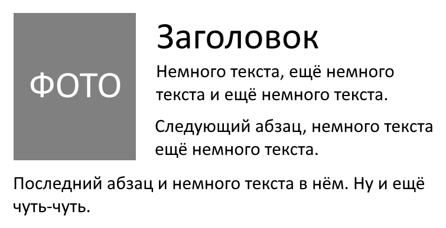
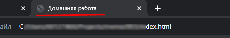

HOME WORK
Задача: сверстать базовую страничку, используя макет:

Тема: свободная. Расскажи о любимом животном и приложи его фотографию.
Что может пригодиться?
<img> – тег для изображений (не парный). Атрибуты к применению:
src – путь или имя файла картинки;
align – выравнивание картинки относительно текста (left – слева, right – справа).
<p> – тег для текстовых абзацев (парный). Без атрибутов.
Не забыть
Основные элементы разметки документа: <html> и <body>.
Почитать
Про элементы <head> и <title>, чтобы установить заголовок страницы:
